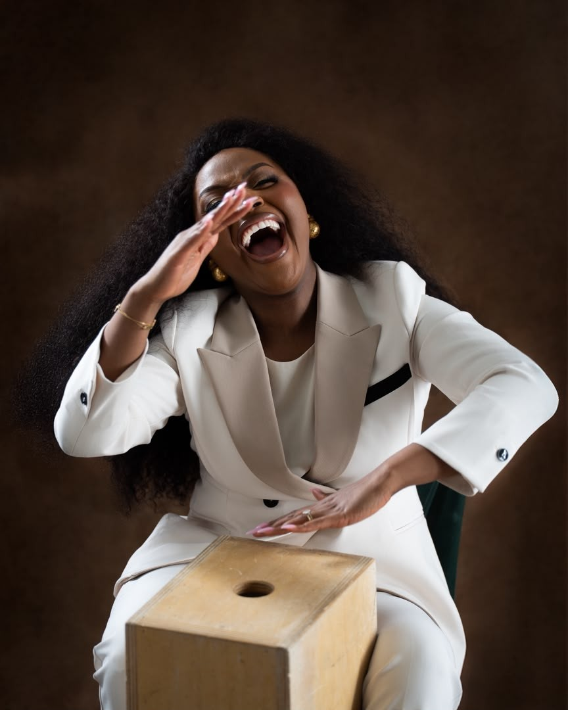
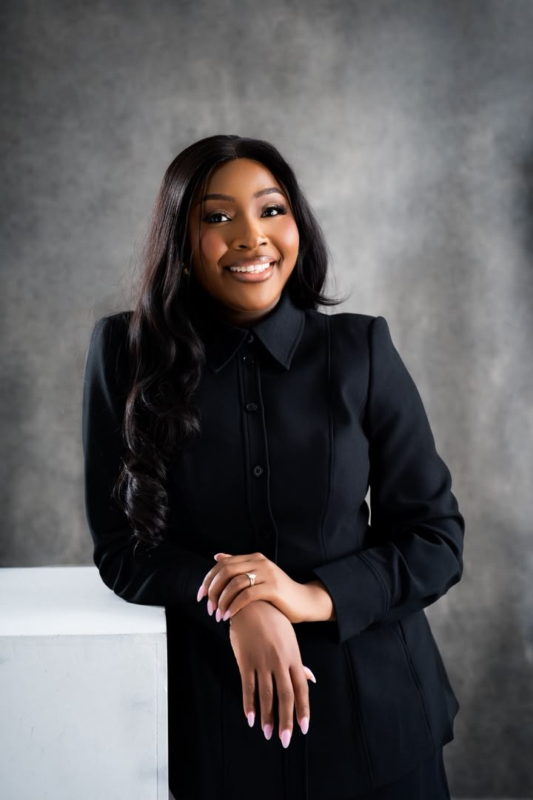

Concept 01 / Personal & welcoming
Warm editorial
Expressive serif typography, generous breathing room and a joyful portrait. An approachable home for mentorship, grounded in professional credibility.
Four directions. Your professional home.
These are working design concepts for your website. Explore each homepage and About page, on your laptop and phone. The copy is a draft; we’re choosing the visual direction first.

Concept 01 / Personal & welcoming
Expressive serif typography, generous breathing room and a joyful portrait. An approachable home for mentorship, grounded in professional credibility.

Concept 02 / Confident & considered
A bold typographic introduction, crisp white space and restrained editorial layouts. A confident expression of healthcare, leadership and impact.
Concept 03 / Dramatic & immersive
A charcoal canvas, large centred serif headlines and a photographic opening. A distinctly darker, portrait-led expression of mentorship and impact.
Concept 04 / Precise & graphic
Oversized sans-serif typography, a numbered three-column structure and smaller photographic moments. A minimal, graphic direction with clear pathways into the work.
For our review conversation
Enquiry buttons demonstrate a future journey. No forms, payments or email delivery are active in these prototypes.